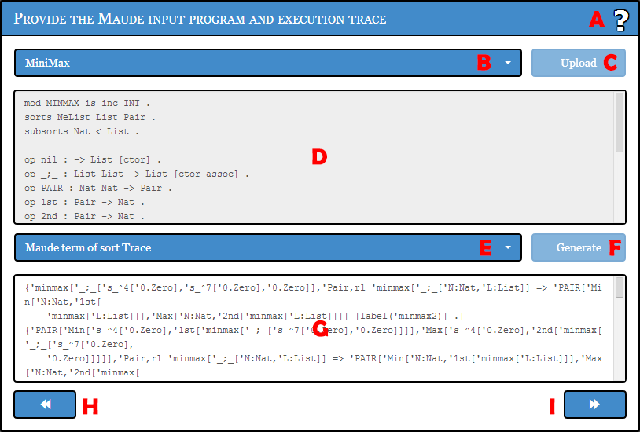

Shows this window.
By using this control, you can either enter a new Maude program or select one of program examples that iJulienne offers for demonstration purposes. Note that examples that are marked with an asterisk include errors on purpose in order to debug them.
- Bank Model*
- Blocks World*
- Bounded Retransmission Protocol
- Container Terminal
- Crossing-River
- Dekker's Algorithm
- Fault-tolerant Protocol*
- Fibonacci
- Maude-NPA
- Maze (with collision)
- MinMax
- Philosophers
- Protein
- Rent-a-car*
- Semaphore
- Stock Exchange*
- Stock Exchange (OO)*
- Webmail Application
- Wolfram Rule 30
You can select a local file containing the source specification in two different ways:
- By uploading a single text file with the maude extension
- Use this option to provide a single text file (with the maude extension) that contains the desired Maude program. Maude commands such as set, load, reduce, rewrite, etc. must be avoided
and will be searched for. If detected, the specification will be considered invalid and an error alert will be displayed.
By uploading a compressed file with the zip extension- A Maude program may consist in a number of modules interrelated via includes, which are usually contained in different files.
However, when a given module A requires (via including) another module B, B must be already loaded in the system, therefore a precise order in which these files must be loaded has to be determined.
This order is generally specified by the user by providing the necessary arguments upon executing the Maude system or by means of the load Maude command, once the interpreter is launched.
In order to satisfy this, iJulienne requires the provided compressed file to comply with the following conditions:
- Must be a ZIP compressed file (with the zip extension).
- Must contain one or several text files (with the maude extension). Additional files are simply ignored.
- The contained maude files must hold at least all the necessary modules for the Maude specification to load properly. There is no restriction on adding non-included additional modules or files, since they will also be ignored.
- No required maude file should contain any Maude command (e.g., load, reduce, rewrite, etc.), otherwise the file will be considered invalid and therefore also the entire zip file.
- A text file named order.ijulienne must be included in the zip file. This file will provide a sorted list of maude filenames in the precise order they need to be loaded for the specification to work, with each filename occupying a single line. Lines starting with the # character will not be readed and can be used to write comments. The following is an example of a valid order.ijulienne file:
- #sorted list of files to be loaded
- file1.maude
- file2.maude
- file3.maude
- file4.maude
- file5.maude
- Optionally, a file named start.ijulienne can be included. If included, and the previous conditions are satisfied, the initial state text area will be automatically filled with the contents of this file.
This text area shows the current Maude specification loaded into the system, if any. Unless one of the predefined examples is loaded, the text area is editable so that the user may enter or edit it manually.
You can provide the computation trace you want to analyze in three different ways:
- Maude term of sort Trace
- Provide a Maude term of sort Trace to start analyzing it. The tool will automatically instrument the provided trace with the corresponding equational and axiomatic steps.
Generate rewriting trace- Provide the initial and final steps of the trace you want to generate and press Generate (F). If exists,
the tool will automatically generate the Maude term of sort Trace occurring between these two states.
Generate equational simplification trace- Maude terms of sort Trace only record rule applications. Therefore, full equational traces are represented as (nil).Trace terms, as they have no rule-application steps.
To start analyzing this kind of (equational) traces, iJulienne offers the possibility to
provide an equational simplificable state to start analyzing the instrumented trace leading to its cannonical form.
Click here to generate the trace occurring from an initial to a final state of your election.
Please notice that the resulting trace will be a Maude term of sort Trace, which only contains rule-applied steps, and therefore can result in an empty trace.
If your desired trace is fully equational, please select the Generate equational simplification trace (E) options instead.
In order start analyzing your trace, you must enter here (in the precise representation given by the previous selector) either:
- A Maude term of sort Trace.
- The initial and final states of the trace you want to generate.
- The state whose equational simplification trace you want to generate.
For more details, please refer to the (E) and (F) sections of this help.
Shows the iJulienne front page.
Click here to start analyzing your Maude trace.